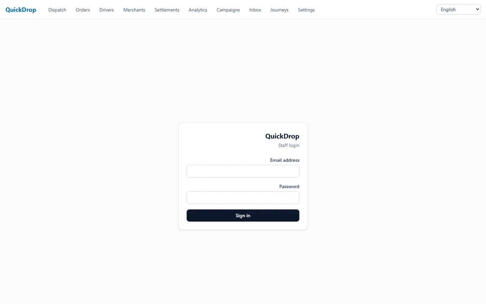

The scale
- Zero users
- 4 test orders, all still confirmed
- Every dispatch ended dispatch_exhausted
- Idle since 2026-07-20; never commercial
The defect happens first, then the mechanism that stops it.
The diagram is wider than this screen — drag it sideways.
-
434
tests passing on a real run — of 567 cases in 77 files; 132 gated behind env guards, 1 guard that fails on purpose
Source
for p in packages/* apps/*; do (cd "$p" && ./node_modules/.bin/vitest run 2>&1 | sed -e 's/\x1b\[[0-9;]*m//g' | grep -E '^ *Tests '); done # 434 نجحت / 132 تُخطّيت / 1 فشلت عمداً = 567. (apps/driver وapps/e2e وapps/miniapp بلا vitest أصلاً) -
39
tables under ENABLE + FORCE RLS in the migrations, out of 42 in the schema
Source
packages/db/migrations/*.sql: حلقة FOREACH في 0003_phase1_protections.sql:9-18 (26 جدولاً) + 15 ALTER TABLE … ENABLE/FORCE صريحة في 0001/0005/0010/0012/0014/0017/0019/0022/0023 − جدولان في 0018_drop_legacy_support.sql = 39. ويطابقه من الجهة الأخرى: 42 pgTable( في packages/db/src/schema/*.ts ناقص RLS_EXCEPTIONS الأربعة في packages/db/scripts/check-rls.ts:10 (tenants، admin_users، tracking_tokens، وspatial_ref_sys الذي تُنشئه PostGIS وليس في السكيما — فالطرح من 42 يبقى ثلاثة). تنبيه واجب الذكر: القاعدة المنشورة تعطي 37 لا 39، لأن الترحيل 0023 لم يُطبَّق عليها (23 من 24). -
0
orders that reached delivery — all 4 are still at confirmed
Source
على الـVPS: docker exec quickdrop-prod-postgres-1 psql -U postgres -d quickdrop -tAc "select status, count(*) from orders group by status" → confirmed|4 ؛ وselect max(created_at) from orders → 2026-07-20 15:15:22+00 ؛ وledger_entries / driver_locations / messages / order_attachments = 0|0|0|0

What it does not do
- No real work ever ran through it: 4 test orders, none past confirmed.
- 132 of 567 tests sit behind environment guards and did not run.
- The geo dispatch engine ran in production and never once succeeded.
- No public URL: every container is bound to 127.0.0.1.
The code, verbatim — packages/db/src/state-machine.ts · L129–L313
// §5: قفل الصف إلزامي — يحسم السباقات (الزبون يلغي والسائق يقبل بنفس اللحظة:
// أحدهما ينتظر القفل، والثاني يفشل بـ InvalidTransitionError).
const locked = await tx.select().from(orders).where(eq(orders.id, args.orderId)).for("update");
// …
const claimed = await tx
.update(orders)
.set({
dispatchRequestedAt: now,
...(order.promisedAt === null ? { promisedAt } : {}),
updatedAt: now,
})
.where(and(eq(orders.id, order.id), isNull(orders.dispatchRequestedAt), eq(orders.fulfillment, "delivery")))
.returning({ id: orders.id });
if (claimed.length === 1) {
await writeOutbox(tx, order.tenantId, "order.ready_for_dispatch", { orderId: order.id });
}
TypeScript · NestJS · PostgreSQL (RLS, PostGIS) · Redis · WhatsApp Business API · Docker
No public link: the containers are bound to 127.0.0.1 on the server.
No public repository.